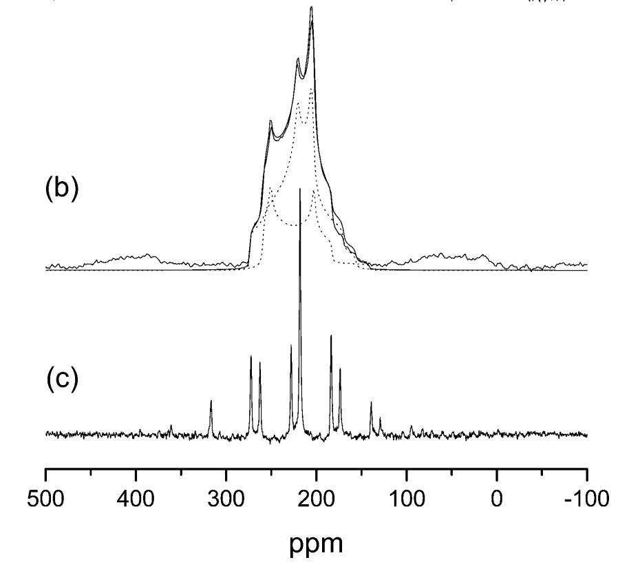
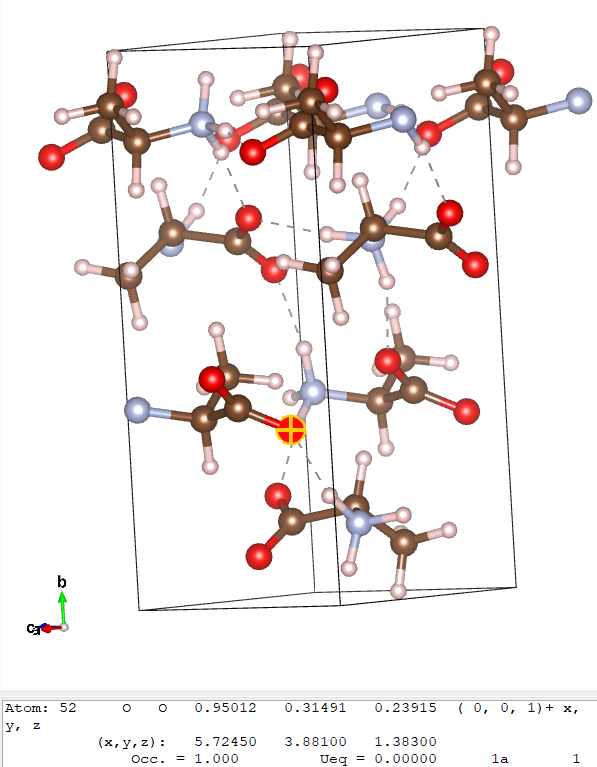
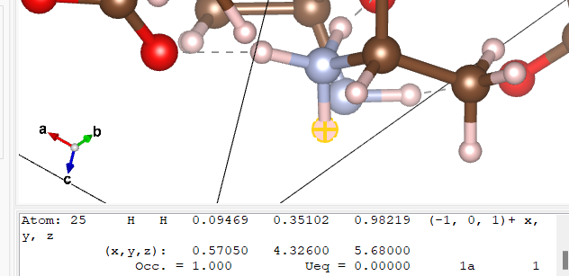

Examples 3 - Alanine and Silicates
We now look at some more realistic and complex structures - the amino acid alanine and 2 different silicates: cristoballite and qartz. These are fairly large crystals - to get them to complete in a short time we will run them on a cluster. Use the following number of CPUs:
- analine - 4
- cristoballite - 6
- quartz - 13
(these numbers are chosen to give efficient k-point scaling)
We will also perform EFG calculations for the above structures and examine the respective data.
Oxygen-17 NMR
Oxygen is a component of many geological materials. Oxygen is also important element in organic and biological molecules since it is often intimately involved in hydrogen bonding. Solid State 17O NMR should be a uniquely valuable probe as the chemical shift range of 17O covers almost 1000 ppm in organic molecules. Furthermore 17O has spin I = 5/2 and hence a net quadrupole moment. As a consequence of this the solid state NMR spectrum is strongly affected by the electric field gradient at the nucleus.
Because the isotopic abundance of 17O is very low (0.037%) and the NMR linewidths due to the electric field gradient relatively large, only limited Solid State NMR data is available. This is particularly true for organic materials. First principles calculations of 17O NMR parameters have played a vital role in assigning experimental spectra, and developing empirical rules between NMR parameters and local atomic structure.
Alanine
Examining input and output
We will use the cell file
Note
Don't worry about how long/complex it is - it is no different from any other cell file - it just simply defines a large cell
and param file alanine.param
fix_occupancy = true
opt_strategy : speed
task = magres
magres_task = nmr
cut_off_energy = 35 ry
xc_functional : PBE
This leads to EFG calculations being performed.
alanine.param](alanine/alanine.param)
You may also want to view the file
in Materials Studio or another software - this allows better examination of features like hydrogen bonding. This is the original file downloaded from the Cambridge Crystallographic Database (and was used to obtain the alanine.cell file). The cell structure was obtained experimentally by neutron diffraction.
We will now run castep. The alanine.castep output file should contain the table
This is much like our previous results, except there are now 2 more columns - C_Q and Eta - these are both there because an EFG calculation was now performed.
This result is not fully converged (we will not be testing this in this tutorial, but feel free to check), but the relative shift between some of the sites is converged (again you may verify that if inclined).
Analysing and comparing to experiment
We will now compare these results with experiment. The figure below is an experimental 17O NMR spectrum of L-alanine. It shows 2 peaks, which are very broad due to the quadripolar coupling, and overlap.

The experimental parameters are given in Table 1 below.
| \delta(A)-\delta(B) (ppm) | 23.5 |
| C_Q(A) (MHz) | 7.86 |
| \eta_Q(A) | 0.28 |
| C_Q(B) (MHz) | 6.53 |
| \eta_Q(B) | 0.70 |
| Table 1: Experimental 17O NMR parameters for alanine. The two resonances are labelled A and B. Isotropic chemical shift \delta, quadrupolar coupling C_{Q}, and EFG asymmetry \eta_Q. |
From this, we will try to find what A and B are.
To do so, we will look at the alanine.castep tensor table.
By a quick glance at the table, we see that the the chemical shift of hydrogen ranges from 20-30ppm, carbon around 0, 124 or 159ppm, nitrogen 194ppm and oxygen 48 or 63ppm. Because of this we can tell that the 2 resonances are going to belong to carbon and oxygen: to get a chemical shift difference of 23.5ppm, oxygen's 48ppm and a hydrogen (ideally of 24.5ppm) are the only option of coming close to that value.
We see in the oxygen portion of the table
===============================================================================
| Chemical Shielding and Electric Field Gradient Tensors |
|-----------------------------------------------------------------------------|
| Nucleus Shielding tensor EFG Tensor |
| Species Ion Iso(ppm) Aniso(ppm) Asym Cq(MHz) Eta |
| O 1 48.29 352.85 0.51 7.125E+00 0.25 |
| O 2 62.86 255.66 0.71 5.794E+00 0.64 |
| O 3 48.29 352.85 0.51 7.125E+00 0.25 |
| O 4 62.86 255.66 0.71 5.794E+00 0.64 |
| O 5 48.29 352.85 0.51 7.125E+00 0.25 |
| O 6 62.86 255.66 0.71 5.794E+00 0.64 |
| O 7 48.29 352.85 0.51 7.125E+00 0.25 |
| O 8 62.86 255.66 0.71 5.794E+00 0.64 |
===============================================================================
that the chemical shift alternates consistently between 48.29 and 62.86. To examine why this is the case we may look at the alanine.cell file in Vesta (or the alanine.pdb file in Materials Studio, or any other option of your choice that shows hydrogen bonding). Similarly to example 1, we will examine which atoms correspond to which environment.
The cell and a purposely highlighted atom are shown below.

The oxygens are the red atoms. We see here that there are effectively 2 types of oxygen here - ones with hydrogen bonding (dashed lines joining to a hydrogen (grey atom)) and ones without. Here atom 52 (oxygen ion 8 in the table; it starts at 44 as there are 44 atoms before it) is selected: this has a chemical shielding value of 62.86ppm, as seen above. When clicking any oxygen with 2 hydrogen bonds it corresponds to an atom number that has a shielding tensor of 62.86ppm, while all the ones with 1 hydrogen bond have a value of 48.29ppm. For this exercise, we have now identified that resonance A comes from a single-hydrogen-bonded oxygen.
There are a lot more hydrogens and thus it is harder to find which specific one A is referring to. Because \delta(A) - \delta(B) = 23.5ppm, we know that the chemical shielding should have a value of around 48.29 - 23.5 = 24.79ppm
From the table, we see that the closest value is 24.01ppm, corresponding to atoms 1, 8, 15 and 22. By clicking on hydrogens until one of those is found, we find that

all 3 of those hydrogens are bonded to a nitrogen that is also bonded to 2 other hydrogens and a carbon. It is different from the other 2 hydrogens because the oxygen it is hydrogen-bonded to has no other hydrogen bonds: A and B are hydrogen-bonded to each other.
These results are confirmed by the other values provided in the table. To confirm A being oxygen 1 (or 3 or 5... - all the values are identical), C_Q in the table is 7.125MHz compared to the expected 7.86MHz, and \eta_Q is 0.25 compared to the expected 0.28 - the results are very similar.
However, this is not the case for hydrogen - a C_Q of 6.53MHz and an \eta_Q of 0.7 are expected, but the castep results are 0.21MHz and 0.06 respectively. In fact, the only ion that comes close to matching the C_Q eta_Q expectation is the other (even-numbered) oxygen type: the oxygen that the hydrogen of interest (1, 8 and 15) is hydrogen-bonded to.
Silicates - Quartz and Cristoballite
As an extra example, we will now perform similar calculations and corresponding analysis with 2 forms of silicate - cristoballite and quartz. Naturally, we wiil do the castep calculations separately
Input and output files
For quartz we will use the cell file
And the param file quartz.param
cut_off_energy = 40 ry
xc_functional : PBE
fix_occupancy = true
opt_strategy : speed
task = magres
magres_task = nmr
elec_energy_tol = 1.0e-12 ry
The param file is identical to the alanine one above.
For cristoballite we will use the cell file
And exactly the same param file as above (just named crist.param instead)
We then run castep on both crystal structures as usual, getting the output files quartz.castep and crist.castep. Within those files, we will have the same types of tables as above:
For quartz:
===============================================================================
| Chemical Shielding and Electric Field Gradient Tensors |
|-----------------------------------------------------------------------------|
| Nucleus Shielding tensor EFG Tensor |
| Species Ion Iso(ppm) Aniso(ppm) Asym Cq(MHz) Eta |
| O 1 234.54 68.31 0.12 -5.085E+00 0.20 |
| O 2 234.54 68.30 0.12 -5.086E+00 0.20 |
| O 3 234.54 68.30 0.12 -5.086E+00 0.20 |
| O 4 234.54 68.30 0.12 -5.086E+00 0.20 |
| O 5 234.54 68.30 0.12 -5.086E+00 0.20 |
| O 6 234.54 68.31 0.12 -5.085E+00 0.20 |
| Si 1 435.01 -5.44 0.82 2.067E+01 0.72 |
| Si 2 435.01 -5.45 0.81 2.067E+01 0.72 |
| Si 3 435.01 -5.44 0.82 2.067E+01 0.72 |
===============================================================================
and for cristoballite
===============================================================================
| Chemical Shielding and Electric Field Gradient Tensors |
|-----------------------------------------------------------------------------|
| Nucleus Shielding tensor EFG Tensor |
| Species Ion Iso(ppm) Aniso(ppm) Asym Cq(MHz) Eta |
| O 1 239.47 79.97 0.08 -5.055E+00 0.14 |
| O 2 239.47 79.97 0.08 -5.055E+00 0.14 |
| O 3 239.47 79.97 0.08 -5.055E+00 0.14 |
| O 4 239.47 79.97 0.08 -5.055E+00 0.14 |
| O 5 239.47 79.97 0.08 -5.055E+00 0.14 |
| O 6 239.47 79.97 0.08 -5.055E+00 0.14 |
| O 7 239.47 79.97 0.08 -5.055E+00 0.14 |
| O 8 239.47 79.97 0.08 -5.055E+00 0.14 |
| Si 1 437.12 -9.36 0.61 -1.077E+01 0.88 |
| Si 2 437.12 -9.36 0.61 -1.077E+01 0.88 |
| Si 3 437.12 -9.36 0.61 -1.077E+01 0.88 |
| Si 4 437.12 -9.36 0.61 -1.077E+01 0.88 |
===============================================================================
Analysing and comparing to experiment
Like with alanine, we will compare it to an experimental 17O NMR parameter table - this is shown below as Table 2
| \delta (ppm) | C_Q (MHz) | \eta_Q | |
|---|---|---|---|
| Material A | 37.2 | 5.21 | 0.13 |
| Material B | 40.8 | 5.19 | 0.19 |
| Table 2: Experimental 17O NMR parameters for two silicates. Isotropic chemical shift \delta , quadrupolar coupling C_Q, and EFG asymmetry \eta_Q. |
This example is much more straightforward - all the atoms of a certain element are identical.
We are given that a suitable \sigma_{ref} (for oxygen) is 263ppm. Using the equation \delta_{iso}=\sigma_{iso} - \sigma - used before in Example 1 - we are able to convert the isometric chemical shielding tensor into a relative chemical shift: O in quartz has a shift of 28.46ppm and in cristoballite it has a shift of 23.53ppm